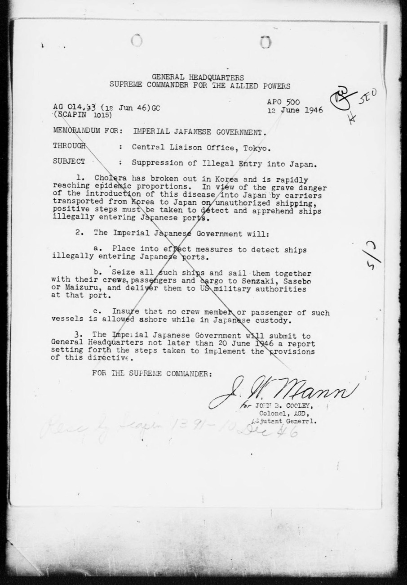

Demos · Archive check · Step 1 of 9
/oss:research-repo. The agent reads CLAUDE.md at the start of every session. This file contains the project’s rules.og/, and the searchable text copies in md/. Each source also gets an entry in the bibliography.manuscript/. It is about Koreans in Japan in 1946 and cites four works.At the end of the Pacific War some two million Koreans lived in Japan. This paper follows what happened to them in 1946, the year in which repatriation, cholera, and a new border control regime met at the Korea Strait.
Repatriation from Japan was largely completed in 1946. Of the more than half a million Koreans who registered in March of that year as wishing to go home, most were shipped to Korea by the end of the year [@morris-suzuki2011]. The quarantine station at Pusan has been described as the most effective in occupied Asia [@lee2019].
Cholera reached Pusan on 1 May 1946, aboard a repatriation ship from Guangdong carrying some 3,100 Korean returnees [@kim2021]. Conditions in Korea were hard for those who came home. Kim writes that “about 80 percent of returnees went back to Japan because of the hardship of life” [@kim2021, my translation].
On 12 June 1946, SCAP suspended the repatriation of Koreans because of the cholera epidemic [@scapin1015]. From then on, the movement of people across the Korea Strait largely stopped.
.claude/commands/process-source.md.
| Original file | New name | Markdown |
|---|---|---|
EMS143795.pdf | kim-2021-cholera-korean-stowaways | Converted (Korean, 197 lines of Hangul, no broken characters) |
S1557466011010916a.pdf | morris-suzuki-2011-guarding-borders-japan | Converted |
9886118.pdf | scap-1946-suppression-illegal-entry | Needs OCR (one-page scan) |
1. The SCAP memo has no Markdown. … The page has a large handwritten X across it and a pencil note reading roughly “Resc by Scapin 1391 – 10 Dec 46”. … The project README says to send image-only files through vlm-ocr. For one typed page, I could also transcribe it by hand into md/. Which do you prefer?
2. Morris-Suzuki: quotation marks are missing. … Any direct quote taken from this file needs checking against the PDF.
3. Kim: some PDF noise. The Europe PMC watermark shows up as fake headings. …
process-source file.
1. Cholera has broken out in Korea and is rapidly reaching epidemic proportions. In view of the grave danger of the introduction of this disease into Japan by carriers transported from Korea to Japan on unauthorized shipping, positive steps must be taken to detect and apprehend ships illegally entering Japanese ports.
sources/md/scap-1946-suppression-illegal-entry.md. The numbered list of nine corrections is at the top of the file.
Body text: paragraphs 1–3, including sub-items a–c, match the scan word for word. The OCR’s errors are all in the material around the body.
Added typed text the OCR skipped:
– the letterhead (General Headquarters, Supreme Commander for the Allied Powers)
– the file reference: AG 014.33 (12 Jun 46)GC (SCAPIN 1015)
– “APO 500 / 12 June 1946”
One misread: “Colonel, AGC” is “Colonel, AGD” (Adjutant General’s Department).
Handwriting:
– …
– Added the faint pencil note at the foot of the page: “Resc by Scapin 1391 - 10 Dec 46”.
– Added the large X drawn across the body text.
– …
Uncertain readings: I marked these with [?] in the file rather than guessing silently. …
Tools: Crossref API, doi.org, OpenAlex, the NDL Digital Collections API and one web search.
| Key | DOI / ID | Status | Note |
|---|---|---|---|
kim2021 | 10.35158/cisspc.2021.10.25.1 | Verified | Resolves to Kim, “Borders, Infiltration, and Elimination…”, vol. 25, pp. 1–38 |
morris-suzuki2011 | 10.1017/S1557466011010916 | Verified | Resolves to the correct article, APJ 9(8) |
scapin1015 | NDL pid 9886118 | Verified | NDL record: “SCAPIN-1015: SUPPRESSION OF ILLEGAL ENTRY INTO JAPAN 1946/06/12 … Rescinded by SCAPIN 1391” |
lee2019 | 10.1353/ks.2019.0099 | LIKELY FABRICATED | The DOI returns 404 at both Crossref and doi.org. An exact-title search on OpenAlex finds 0 works. … Korean Studies vol. 43 (2019) has no slot for pp. 77–102: pp. 68–95 belong to Rhee and pp. 96–119 to Kal. |
Knowledge base: 3 of 4 cited works matched. … scapin1015 → scap-1946-suppression-illegal-entry.md. I corrected this file earlier in this session, but only the material around the body text, so the verdict below doesn’t depend on my edits.
| Claim | Verdict | Source passage |
|---|---|---|
| Of the >500,000 who registered in March 1946, “most were shipped to Korea by the end of the year” (morris-suzuki2011) | CONTRADICTED | The registration figure is right … The rest is not: “Ultimately, less than 100,000 Koreans were repatriated between April 1946 and June 1950 … Around 600,000 Koreans remained in Japan.” |
| “about 80 percent of returnees went back to Japan because of the hardship of life” (kim2021) | CONTRADICTED the translation changes who the 80% refers to | “… 그들 중 약 80%는 생활고로 인해 다시 일본행을 택한 것이었다.” The stowaways of this period were all returnees, and of them about 80% chose Japan again because of hardship. |
| “On 12 June 1946, SCAP suspended the repatriation of Koreans because of the cholera epidemic” (scapin1015) | UNSUPPORTED date and cholera motive correct; the action is wrong | The directive covers illegal entry into Japan: “positive steps must be taken to detect and apprehend ships illegally entering Japanese ports” … It says nothing about repatriation. |
| Pusan’s quarantine station was “the most effective in occupied Asia” (lee2019) | NOT IN KB | Likely fabricated. Kim, which is in the knowledge base, says the opposite: quarantine at Japan’s repatriation ports was more thorough than at Pusan. |
| Cholera reached Pusan 1 May 1946 on a ship from Guangdong carrying ~3,100 Korean returnees (kim2021) | SUPPORTED | “중국 광동에서 조선인 귀환자 3,100 여 명을 태우고 5월 1일 부산으로 들어온 귀환선 내에 콜레라 환자가 발생한 것이다.” |
| “movement … largely stopped” after June 1946 (uncited) | CONTRADICTED BY THE KB | Kim: 7,378 Koreans were arrested in July alone, and about 10,000 a month were estimated to be entering Japan. |
Read together, the knowledge base supports the opposite of the manuscript’s thesis: repatriation stalled, and cholera came with increased crossings back to Japan, not an end to them.
| Planted in the draft | The agent’s verdict |
|---|---|
| Morris-Suzuki reversed | Contradicted, with the passage |
| Kim’s “them” turned into “returnees” | Contradicted, with the Korean |
| SCAPIN 1015 cited for something it does not say | Unsupported, from the corrected OCR text |
| A reference that does not exist | Likely fabricated (dead DOI, no such title) |
| The cholera ship (correct) | Supported |
The machine narrows where I look. I open the source and decide what to write.
I recorded this run on 21 October 2026 with Claude Code and the Open Science Skills, in a project set up with /oss:research-repo. The agent did the intake, the check of the OCR text, and the claim check. I ran the OCR script myself, because the agent had stopped to ask how to handle the scan. The agent’s output is shown as it came, cut where you see …. The run was headless. In a normal session the agent asks before it runs a command, and you approve each one.
GLM-OCR ran on the same laptop through Ollama, so the OCR itself sends nothing to a provider, which some archives require. The agent’s check of the OCR text does send the scan image to the model provider. In an earlier run, when the scan had no text copy at all, the claim check refused to run because only half the cited works could be searched.
The wording of the verdicts changes from run to run, so one run may say “contradicted” where another says “unsupported”. Everything the agent reads is sent to the model provider.